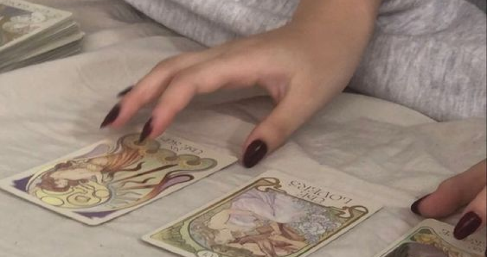

Колода таро состоит из 78 карт, каждая из которых
представляет собой определенный символический образ. В колоде
22 карты большого аркана и 56 карт малого аркана,
которые делятся на четыре масти: жезлы, чаши, мечи
и пентакли. Четверки — карты малого аркана. Это:
стабильность, устойчивость и организованность. Они указывают
на то, что ситуация находится под контролем и имеет ясную
структуру. Конкретный смысл каждой четверки может отличаться
в зависимости от масти, к которой она относится.
Рассмотрим каждую масть по отдельности:
четверка жезлов
Четверка жезлов — just working, working hard so I
can please you — физическая работа, усилия
и трудности, которые необходимо преодолеть. Эта карта может
означать прогресс и достижения в области карьеры
и бизнеса и учебы. Если в раскладе карта четверки
жезлов сочетается с картами, указывающими на движение
и прогресс, то результатом будет успех в начинаниях.
четверка чаш
Четверка чаш может указывать на хайп, сюр, флекс и что
в отношениях все кул. Она также может означать успех
в творческих начинаниях. Четверка чаш может указывать
на то, что в семье будет все ок. Возможно,
ты найдешь удовольствие в том, что делаешь, и будешь
чувствовать удовлетворенность от жизни, у тебя
не будет тревоги.
четверка мечей
Четверка мечей указывает на анмэтч, тревогу, и ваще все
не хайп. Эта карта может также означать потерю контроля или
неудачу. Если в раскладе карта четверки мечей сочетается
с картами, указывающими на проблемы и трудности,
то результатом будет ощущение, что все очень плохо. Однако,
четверка мечей также может указывать на то, что необходимо
принять трудное решение и пересмотреть свои взгляды
на жизнь.

четверка пентаклей
Четверка пентаклей обычно указывает на то, что ты больше
не нищенка. Она также может означать что у тебя все секси
с твоим масиком или партнершей. Если в раскладе карта
четверки пентаклей сочетается с картами, указывающими
на денежку, то результатом будет апгрейд в этих
сферах. В целом, четверки указывают на хайп,
но конкретный смысл каждой четверки зависит от масти
и контекста карты в раскладе.